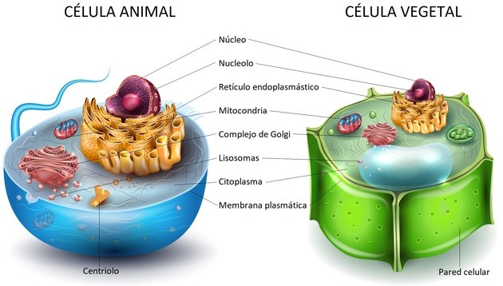

LA CÉLULA
¿QUÉ ES LA CÉLULA?
Es la unidad más pequeña que puede vivir por sí sola y que forma todos los organismos vivos y los tejidos del cuerpo.
Es la unidad más pequeña que puede vivir por sí sola y que forma todos los organismos vivos y los tejidos del cuerpo.

Célula Eucariota

Célula animal
La célula eucariota animal se caracteriza por no poseer un núcleo una pared celular rígida, por lo que puede variar de forma. Asimismo, estas células poseen un núcleo definido que contiene el ADN que será heredado por los descendientes, animales o humanos, que son organismos pluricelulares.
Las células animales realizan diversas funciones necesarias para el organismo de los animales y seres humanos, por ello, estas células son más complejas.
Célula vegetal
La célula eucariota vegetal, a diferencia de la célula animal, posee una pared celular rígida compuesta por celulosa que le otorga una serie de características propias de las plantas y vegetales.
La célula vegetal también contiene cloroplastos, orgánulos que llevan a cabo el proceso de la fotosíntesis, ya que poseen clorofila.
Asimismo, la célula vegetal está compuesta por una estructura capaz de producir su propio alimento, propia de los organismos autótrofos, a diferencia de la célula animal.

La célula procariota se caracteriza por ser más sencilla que la célula eucariota y por no poseer un núcleo celular bien definido, por ello, el material genético se encuentra extendido por el citoplasma.
Obra publicada con Licencia Creative Commons Reconocimiento Compartir igual 4.0